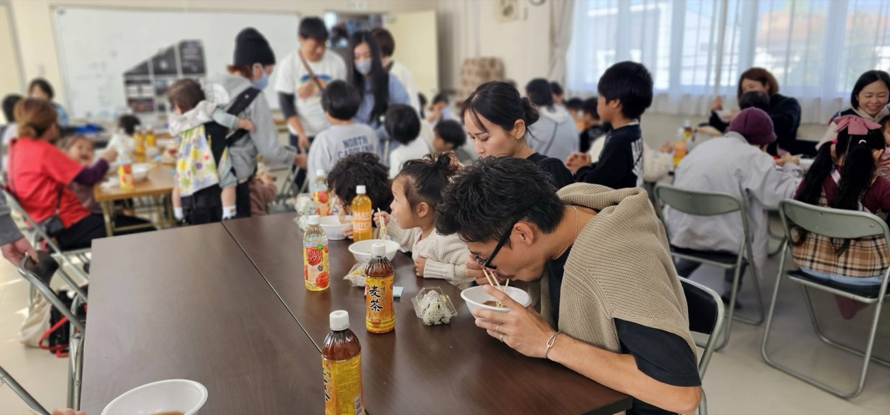
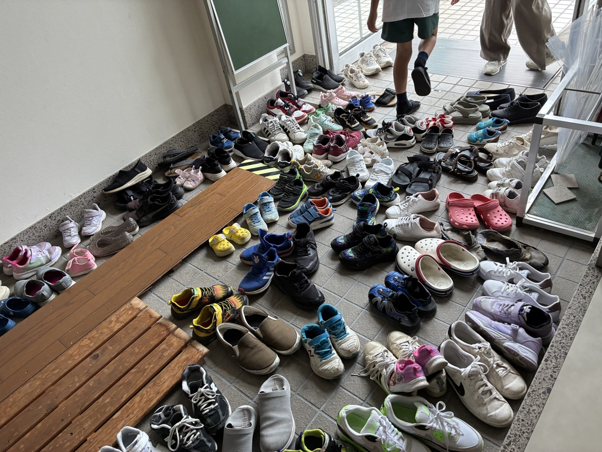
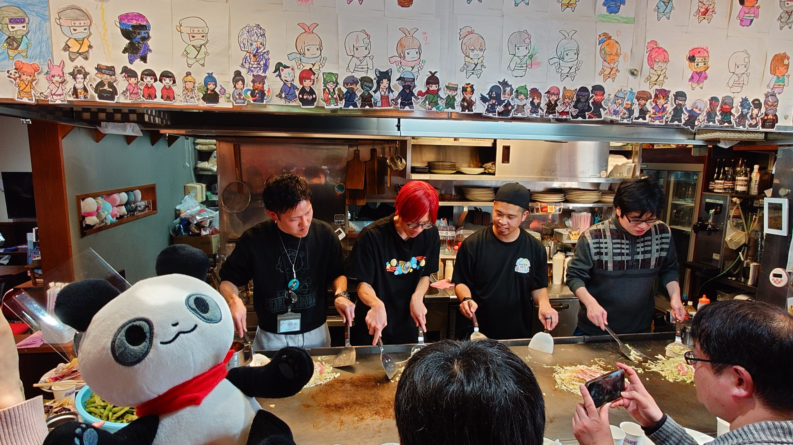
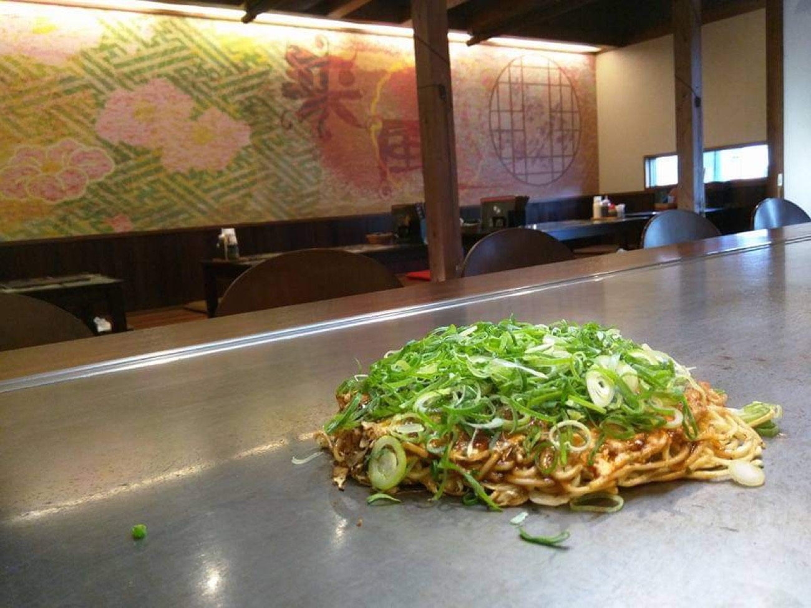
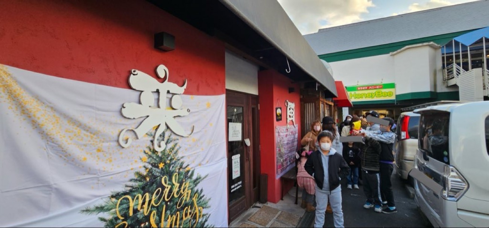
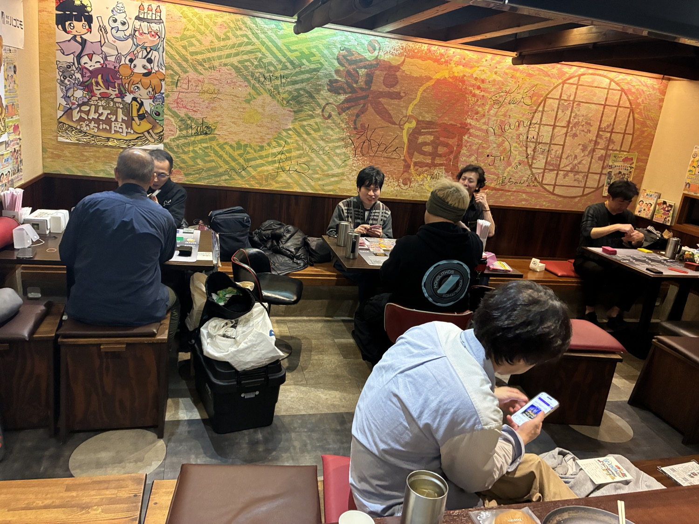
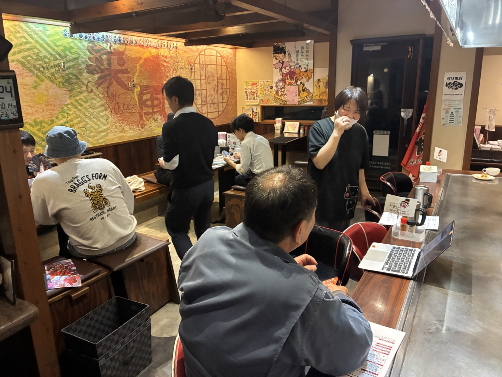

子ども食堂の現場
配膳台の横で、次回告知の言葉を拾う。
湯気の立つ鍋、走り回る子ども、片付けながら話すスタッフ。「来月は初めての人にも来てほしい」という一言から、チラシ文面とSNS投稿の方向性が決まっていきます。
Open Chat for builders
ただ学ぶだけでなく、実際に手を動かす人へ。地域の現場で見つけた小さな課題を、AIと仲間の力で形に変えていく実践コミュニティです。
Why we started
きっかけは、子ども食堂や小さなお店の現場で何度も見た同じ課題でした。手伝いたい人はいる。アイデアもある。けれど、告知文を作る、予約導線を整える、写真を編集する、活動報告をまとめる。そこで手が止まってしまう。
一方で、AIを学ぶ場には情報があふれています。プロンプト、ツール、最新ニュース。でも、地域のテーブルに持ち込んで、誰かの役に立つ形まで仕上げる経験はなかなか得られません。
このコミュニティは、知識を集める場所ではありません。小さく試し、失敗を共有し、次の一手を一緒に考える場所です。運営者が大切にしているのは、完璧な計画よりも、今日ひとつ動かすこと。AIを「便利な道具」で終わらせず、地域に手触りのある価値を生むことです。


Real scenes
抽象的な勉強会ではなく、現場と制作がつながる日常を共有します。
湯気の立つ鍋、走り回る子ども、片付けながら話すスタッフ。「来月は初めての人にも来てほしい」という一言から、チラシ文面とSNS投稿の方向性が決まっていきます。
ChatGPTで構成を出し、画像生成でラフを作り、CanvaやHTMLで形にする。最後は「この表現ならあの人に届くか」を参加者同士で確認します。
「この文章だと硬いかも」「予約フォームを先に作ろう」「店頭POPならこの写真が強い」。小さな提案が重なり、ひとりでは止まっていた企画が動き始めます。
Before / After
Credibility
初期コミュニティとして、現実的に続けられる活動設計にしています。





地域イベントの告知改善、子ども食堂の発信サポート、個人店のメニュー整理、AIを使ったチラシ案、フォーム設計、簡易LP制作など。写真に残るような現場の出来事を、次の参加につながる発信へ変えていきます。
週ごとの実践共有、制作物へのフィードバック、現場で試した結果の共有。成果物は小さくても、実際に使うことを優先します。
Participation filter
コミュニティの熱量を守るため、合う人と合わない人を明確にしています。
Join now
参加者が増えすぎる前に、まずは「実際に動く人」が集まる状態を作ります。見るだけの人数を増やすより、制作物と実践共有が生まれる密度を優先します。
参加後は、自己紹介だけでなく「今やってみたいこと」または「地域で気になっている課題」をひとつ投稿してください。投稿できない場合、このコミュニティには合わない可能性があります。